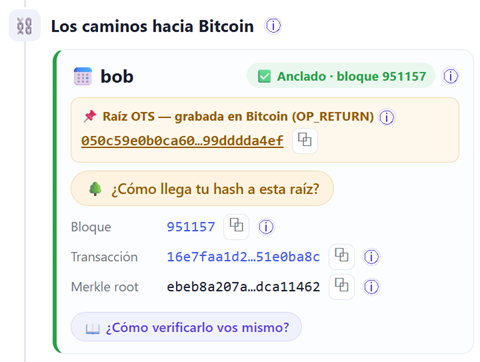
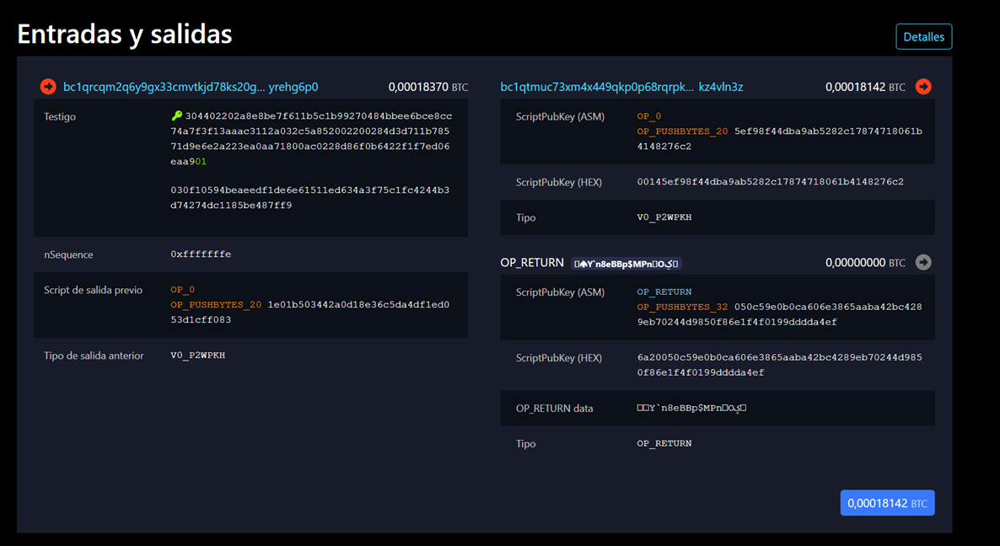
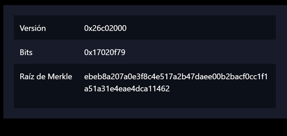

.ots
El respaldo se compone de dos archivos: el documento y su archivo .ots. Este último no contiene el documento, sino la prueba criptográfica: el hash del archivo, la cadena de operaciones que asciende por el árbol de agregación del calendar hasta la Raíz OTS, la transacción en la que dicha raíz quedó registrada y el camino de Merkle que la vincula con el bloque N.
El archivo .ots puede inspeccionarse directamente mediante el comando ots info archivo.ots, que expone exactamente esta información. El analizador no incorpora datos adicionales: se limita a presentar ese contenido mediante una interfaz más legible. En consecuencia, la totalidad de los valores mostrados puede contrastarse con el contenido del propio archivo. Estos son los valores del sello:
.ots (presentado por el analizador)Hay una sola cosa que el .ots no contiene: la prueba de que el bloque N es real. Su attestation guarda únicamente la altura del bloque —un número—; que esa altura corresponda a un bloque verdadero, dotado de prueba de trabajo, lo aporta Bitcoin a través de su cabecera de 80 bytes. El .ots es, por tanto, una prueba condicional: «si el bloque N posee determinada raíz de Merkle, entonces el documento existía cuando dicho bloque fue minado». Comprobarlo consiste en satisfacer esa condición consultando la cabecera real del bloque:
.ots (la prueba) + cabecera del bloque (el ancla)Los tres procedimientos que siguen obtienen esa cabecera, y confían en ella, de maneras distintas; por ello certifican la misma fecha y se diferencian únicamente en el agente sobre el que recae la confianza: un explorador, el nodo propio, o exclusivamente la matemática aplicada sobre la cabecera. Los tres son igualmente válidos; la elección depende del contexto y del grado de soberanía deseado.
La Raíz OTS, la transacción y el bloque provienen del analizador (consignados más arriba). De manera equivalente, el archivo .ots puede inspeccionarse con ots info, donde figura la misma información.
Confianza requerida: el analizador (o, en su defecto, el cotejo con el archivo original).

Acceda a la transacción en mempool.space (o en blockstream.info):
https://mempool.space/tx/‹identificador de la transacción›
Identifique el bloque que contiene la transacción y su marca temporal: esa es la fecha que el sello certifica.
Confianza requerida: el explorador (la existencia de la transacción, su inclusión en el bloque y la validez de este).
Entre las salidas de la transacción figura una de tipo OP_RETURN (no transfiere fondos: 0 BTC; únicamente registra datos). A continuación de los bytes 6a20 se hallan los 32 bytes de la Raíz OTS. Cotéjense con el valor que muestra el analizador:
Confianza requerida: el explorador (para leer el OP_RETURN); la Raíz OTS procede del analizador o del archivo .ots.
En este procedimiento la confianza recae por completo en el explorador: él afirma que el bloque es real y que la transacción está incluida; la inspección del OP_RETURN es la parte que puede verse directamente. Los procedimientos ② y ③ sustituyen esa afirmación por una comprobación propia de la misma ancla —la cabecera del bloque—.

Únicamente sobre el nodo propio. No se requiere confiar en ningún servicio externo: el nodo ya descargó y validó la totalidad de la cadena (prueba de trabajo, raíces de Merkle y cada transacción). Constituye la opción de mayor soberanía.
En un equipo que ejecute Bitcoin Core (resulta suficiente; no se requieren índices ni servicios adicionales), instálese el cliente de OpenTimestamps y, disponiendo del documento original junto a su archivo .ots, ejecútese:
ots verify archivo.ots
El cliente solicita al nodo, a través de su interfaz RPC, la cabecera del bloque correspondiente, recalcula la prueba y devuelve un resultado de la forma:
Success! Bitcoin block N attests existence as of 2025-…
El nodo es la única fuente consultada: no se recurre a mempool ni a ningún tercero.
La verificación no consulta el OP_RETURN en la cadena: la transacción —con la Raíz OTS en su OP_RETURN— está contenida en el propio archivo .ots, que el cliente reconstruye internamente. Lo único que solicita al nodo es la cabecera del bloque (80 bytes), para cotejar la raíz de Merkle recalculada con header.merkleroot. Un nodo pruned descarta los bloques antiguos, pero conserva todas las cabeceras; por ello basta para una verificación completa. La coincidencia de la raíz de Merkle prueba, por sí sola, que esa transacción —y su OP_RETURN— está incluida en el bloque: la inspección del OP_RETURN en el explorador (procedimiento ①) es un cotejo visual complementario, no un requisito de la comprobación criptográfica.
El procedimiento de menor confianza posible en ausencia de un nodo propio. El nodo (procedimiento ②) constituye el ideal, al no requerir terceros. Aquí, sin disponer de un nodo, la comprobación matemática y la prueba de trabajo se realizan de manera independiente. Lo único que se solicita a un tercero es la cabecera de 80 bytes del bloque, de tamaño mínimo. Conviene obtenerla de varias fuentes independientes y comprobar que coinciden: por ejemplo, dos exploradores distintos (mempool.space y blockstream.info), el nodo de un tercero de confianza (un conocido, un servicio comunitario) o una instancia pública de Esplora. La cabecera cruda puede descargarse incluso por API: GET /api/block/<hash>/header.
El archivo .ots no contiene las demás transacciones del bloque, sino únicamente la docena de hashes «hermanos» del camino (un bloque de aproximadamente 4.000 transacciones requiere alrededor de 12 hashes, no 4.000). Con la transacción propia y esos hashes se recalcula la raíz de Merkle del bloque, en su totalidad sin conexión y sin descargar el bloque completo.
Obsérvese que este procedimiento adquiere sentido una vez verificado, mediante el procedimiento ①, que el OP_RETURN propio se halla en dicho bloque. Aquí se demuestra que ese bloque es auténtico sin recurrir a la confianza en un explorador: el cálculo se efectúa de manera independiente.
Ábrase el bloque y obsérvese su campo Merkle Root (el resumen criptográfico de la totalidad de sus transacciones):
https://mempool.space/block/‹altura› · blockstream.info
En ocasiones el archivo .ots almacena la raíz de Merkle en orden inverso, byte a byte. Si los valores no coinciden a primera vista, léase uno de ellos por pares de caracteres, de derecha a izquierda: se trata del mismo número en orden invertido. La verificación automática admite ambas orientaciones.
La raíz de Merkle, en sus dos orientaciones posibles:

No se confía en ella: se la comprueba. El identificador del bloque (su prueba de trabajo) es el doble SHA-256 de estos 80 bytes; al calcularlo se constata que cumple el objetivo de dificultad. En esos mismos 80 bytes figuran la raíz de Merkle (campo 3) y la marca temporal (campo 4):